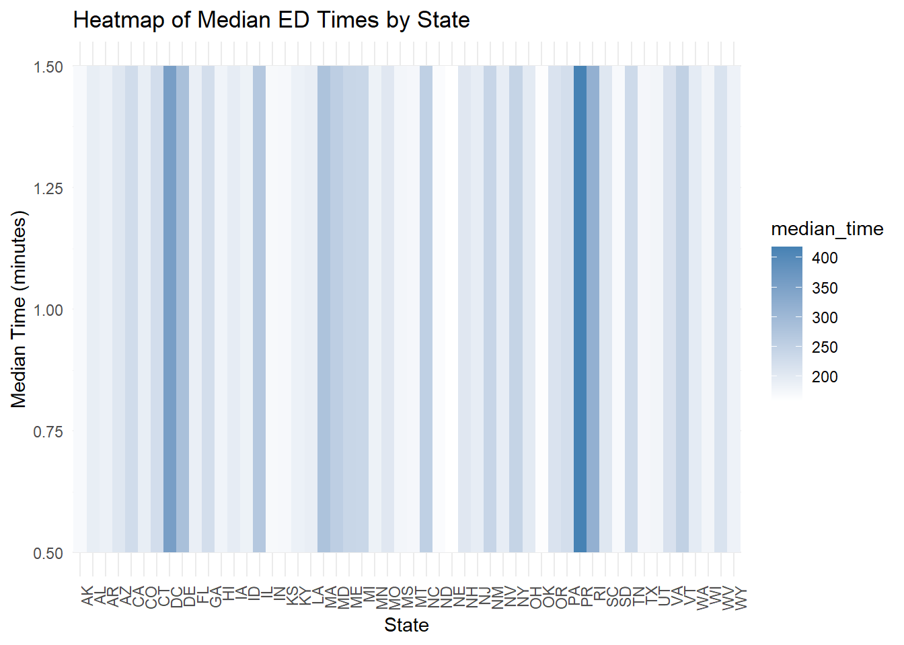
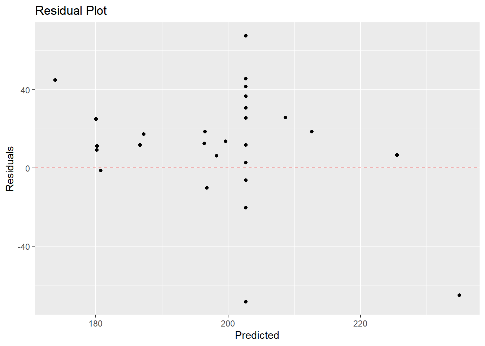
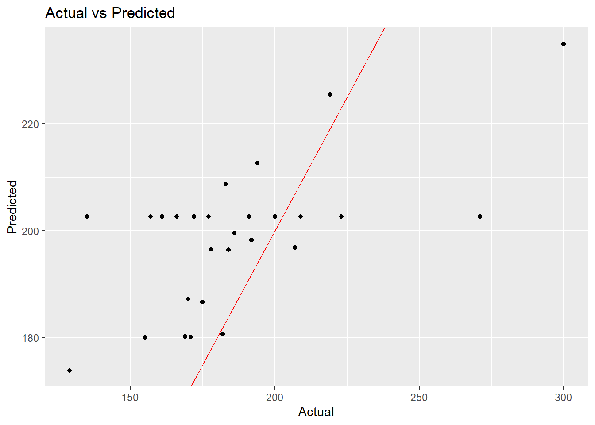

The data for this week’s tidy tuesday assignment has been obtained from the Centers for Medicare and Medicaid Services (CMS). The data contains state-level results for medicare.gov “timely and effective care” measurements. Firs, we load the packages that we need.
library(here)
here() starts at C:/Pooja/Pooja/Spring 2025/EPID-BIOS-8060E-MADA/PoojaGokhale-MADA-Portfolio
── Conflicts ────────────────────────────────────────── tidyverse_conflicts() ──
✖ dplyr::filter() masks stats::filter()
✖ dplyr::lag() masks stats::lag()
ℹ Use the conflicted package (<http://conflicted.r-lib.org/>) to force all conflicts to become errors
Rows: 1232 Columns: 8
── Column specification ────────────────────────────────────────────────────────
Delimiter: ","
chr (5): state, condition, measure_id, measure_name, footnote
dbl (1): score
date (2): start_date, end_date
ℹ Use `spec()` to retrieve the full column specification for this data.
ℹ Specify the column types or set `show_col_types = FALSE` to quiet this message.
Now, let’s look at the data:
str(tidydata)
spc_tbl_ [1,232 × 8] (S3: spec_tbl_df/tbl_df/tbl/data.frame)
$ state : chr [1:1232] "AK" "AK" "AK" "AK" ...
$ condition : chr [1:1232] "Healthcare Personnel Vaccination" "Healthcare Personnel Vaccination" "Emergency Department" "Emergency Department" ...
$ measure_id : chr [1:1232] "HCP_COVID_19" "IMM_3" "OP_18b" "OP_18b_HIGH_MIN" ...
$ measure_name: chr [1:1232] "Percentage of healthcare personnel who are up to date with COVID-19 vaccinations" "Healthcare workers given influenza vaccination Higher percentages are better" "Average (median) time patients spent in the emergency department before leaving from the visit A lower number o"| __truncated__ "Average time patients spent in the emergency department before being sent home A lower number of minutes is better (high)" ...
$ score : num [1:1232] 7.3 80 140 157 136 136 NA 196 230 182 ...
$ footnote : chr [1:1232] NA NA "25, 26" "25, 26" ...
$ start_date : Date[1:1232], format: "2024-01-01" "2023-10-01" ...
$ end_date : Date[1:1232], format: "2024-03-31" "2024-03-31" ...
- attr(*, "spec")=
.. cols(
.. state = col_character(),
.. condition = col_character(),
.. measure_id = col_character(),
.. measure_name = col_character(),
.. score = col_double(),
.. footnote = col_character(),
.. start_date = col_date(format = ""),
.. end_date = col_date(format = "")
.. )
- attr(*, "problems")=<externalptr>
View(tidydata)
The data dictionary tells us that these are the variables: state: state code condition: admission condition measure_id: ID of thing being measured measure_name: Name of thing being measured score: score of the measure footnote: start date end date
Let us summarize the data and look for discrepancies:
table(tidydata$state)
AK AL AR AS AZ CA CO CT DC DE FL GA GU HI IA ID IL IN KS KY LA MA MD ME MI MN
22 22 22 22 22 22 22 22 22 22 22 22 22 22 22 22 22 22 22 22 22 22 22 22 22 22
MO MP MS MT NC ND NE NH NJ NM NV NY OH OK OR PA PR RI SC SD TN TX UT VA VI VT
22 22 22 22 22 22 22 22 22 22 22 22 22 22 22 22 22 22 22 22 22 22 22 22 22 22
WA WI WV WY
22 22 22 22
All the states have the same number of entries.
Now, let’s look at the admission condition:
table(tidydata$condition)
Cataract surgery outcome Colonoscopy care
56 56
Electronic Clinical Quality Measure Emergency Department
56 672
Healthcare Personnel Vaccination Sepsis Care
112 280
There are no NA’s in the conditions.
Now, let’s look at the measure ID and measure name:
Average (median) time patients spent in the emergency department before leaving from the visit- Psychiatric/Mental Health Patients. A lower number of minutes is better
56
Average (median) time patients spent in the emergency department before leaving from the visit A lower number of minutes is better
56
Average time patients spent in the emergency department before being sent home A lower number of minutes is better (high)
112
Average time patients spent in the emergency department before being sent home A lower number of minutes is better (low)
56
Average time patients spent in the emergency department before being sent home A lower number of minutes is better (moderate)
56
Average time patients spent in the emergency department before leaving from the visit - Psychiatric/Mental Health Patients. A lower number of minutes is better (high)
56
Average time patients spent in the emergency department before leaving from the visit - Psychiatric/Mental Health Patients. A lower number of minutes is better (low)
56
Average time patients spent in the emergency department before leaving from the visit - Psychiatric/Mental Health Patients. A lower number of minutes is better (moderate)
56
Average time patients spent in the emergency department before leaving from the visit - Psychiatric/Mental Health Patients. A lower number of minutes is better (very high)
56
Healthcare workers given influenza vaccination Higher percentages are better
56
Percentage of healthcare personnel who are up to date with COVID-19 vaccinations
56
Percentage of patients receiving appropriate recommendation for follow-up screening colonoscopy Higher percentages are better
56
Percentage of patients who came to the emergency department with stroke symptoms who received brain scan results within 45 minutes of arrival Higher percentages are better
56
Percentage of patients who had cataract surgery and had improvement in visual function within 90 days following the surgery Higher percentages are better
56
Percentage of patients who left the emergency department before being seen Lower percentages are better
56
Percentage of patients who received appropriate care for severe sepsis and septic shock. Higher percentages are better
56
Safe Use of Opioids - Concurrent Prescribing
56
Septic Shock 3-Hour Bundle
56
Septic Shock 6-Hour Bundle
56
Severe Sepsis 3-Hour Bundle
56
Severe Sepsis 6-Hour Bundle
56
Now, let’s look at the score:
summary(tidydata$score)
Min. 1st Qu. Median Mean 3rd Qu. Max. NA's
1 70 93 134 193 730 155
Min. 1st Qu. Median Mean 3rd Qu. Max.
"2023-01-01" "2023-04-01" "2023-04-01" "2023-04-09" "2023-04-01" "2024-01-01"
summary(tidydata1$end_date)
Min. 1st Qu. Median Mean 3rd Qu. Max.
"2023-12-31" "2024-03-31" "2024-03-31" "2024-03-16" "2024-03-31" "2024-03-31"
There are no NA’s or odd values.
Let’s look at the Average (median) time patients spent in the emergency department before leaving from the visit by state.
library(dplyr)library(ggplot2)# Filter and summarizeed_summary <- tidydata1 %>%filter(grepl("Average time", measure_name, ignore.case =TRUE)) %>%filter(!is.na(score)) %>%group_by(state) %>%summarise(median_time =median(score, na.rm =TRUE)) %>%arrange(median_time)ggplot(ed_summary, aes(x = state, y =1, fill = median_time)) +geom_tile() +scale_fill_gradient(low ="white", high ="steelblue") +labs(title ="Heatmap of Median ED Times by State",x ="State",y ="Median Time (minutes)" ) +theme_minimal() +theme(axis.text.x =element_text(angle =90, hjust =1))

We see Puerto Rico has the longest wait time, followed by District of Columbia.
Let’s create a table to look at the different measures:
The following object is masked from 'package:dplyr':
group_rows
# Create a summary table of the 'measure_name' columnmeasure_name_summary <-table(tidydata1$measure_name)# Convert to a data framemeasure_name_summary_df <-as.data.frame(measure_name_summary)# Generate a manuscript-quality table with kableExtrameasure_name_summary_df %>%kable(col.names =c("Measure Name", "Frequency"), caption ="Summary of Measure Names in the Dataset") %>%kable_styling(bootstrap_options =c("condensed", "responsive"), full_width = F, position ="center") %>%row_spec(0, bold =TRUE, font_size =12) %>%column_spec(1, width ="15em", bold =TRUE) %>%column_spec(2, width ="8em", color ="black") %>%footnote(general ="Table 1: Frequency distribution of 'Measure Name' in the dataset.", general_title ="Note:")
Summary of Measure Names in the Dataset
Measure Name
Frequency
Average (median) time patients spent in the emergency department before leaving from the visit- Psychiatric/Mental Health Patients. A lower number of minutes is better
52
Average (median) time patients spent in the emergency department before leaving from the visit A lower number of minutes is better
52
Average time patients spent in the emergency department before being sent home A lower number of minutes is better (high)
96
Average time patients spent in the emergency department before being sent home A lower number of minutes is better (low)
48
Average time patients spent in the emergency department before being sent home A lower number of minutes is better (moderate)
51
Average time patients spent in the emergency department before leaving from the visit - Psychiatric/Mental Health Patients. A lower number of minutes is better (high)
48
Average time patients spent in the emergency department before leaving from the visit - Psychiatric/Mental Health Patients. A lower number of minutes is better (low)
48
Average time patients spent in the emergency department before leaving from the visit - Psychiatric/Mental Health Patients. A lower number of minutes is better (moderate)
50
Average time patients spent in the emergency department before leaving from the visit - Psychiatric/Mental Health Patients. A lower number of minutes is better (very high)
48
Healthcare workers given influenza vaccination Higher percentages are better
52
Percentage of healthcare personnel who are up to date with COVID-19 vaccinations
52
Percentage of patients receiving appropriate recommendation for follow-up screening colonoscopy Higher percentages are better
52
Percentage of patients who came to the emergency department with stroke symptoms who received brain scan results within 45 minutes of arrival Higher percentages are better
52
Percentage of patients who had cataract surgery and had improvement in visual function within 90 days following the surgery Higher percentages are better
12
Percentage of patients who left the emergency department before being seen Lower percentages are better
52
Percentage of patients who received appropriate care for severe sepsis and septic shock. Higher percentages are better
52
Safe Use of Opioids - Concurrent Prescribing
52
Septic Shock 3-Hour Bundle
52
Septic Shock 6-Hour Bundle
52
Severe Sepsis 3-Hour Bundle
52
Severe Sepsis 6-Hour Bundle
52
Note:
Table 1: Frequency distribution of 'Measure Name' in the dataset.
The question here is - Is there a relationship between average wait times and the state?
First, let’s create a dataset which looks at only 1 measure. Since ‘Average time patients spent in the emergency department before being sent home’ has 96 reports, let’s consider this one.
# Load dplyr librarylibrary(dplyr)# Filter the dataset for the specific measure nametidydata_model <- tidydata1 %>%filter(measure_name =="Average time patients spent in the emergency department before being sent home A lower number of minutes is better (high)")
Now, let’s look at the relationship between wait times and state:
# Fit a linear model with state as the predictormodel_state <-lm(score ~ state, data = tidydata_model)# View the summary of the modelsummary(model_state)
We see that District of Columbia, Delaware, Illinois, Massachusetts, Maryland, Maine, New Mexico, New York, Puerto Rico, Rhode Island, and Vermont have significantly higher emergency department wait times.
We see that the R-squared is 0.8619. Thus, states can explain 86% of the variation in wait times.
Now, let’s explore some ML models: First, we split the data into train and test: (Ideally, we should use stratification by state to handle possible imbalances, but since the dataset is small (96), this is not possible). We also create cv splits.
Type rfNews() to see new features/changes/bug fixes.
Attaching package: 'randomForest'
The following object is masked from 'package:dplyr':
combine
The following object is masked from 'package:ggplot2':
margin
# Ensure factor levels are consistent across training and testing setstidydata_model$state <-factor(tidydata_model$state)# Split the Dataset.seed(123)data_split <-initial_split(tidydata_model, prop =0.7)train_data <-training(data_split)test_data <-testing(data_split)# Set factor levels for 'state' to include all possible states in both the training and testing setsall_states <-levels(tidydata_model$state) # Get all the levels of the "state" columntrain_data$state <-factor(train_data$state, levels = all_states)test_data$state <-factor(test_data$state, levels = all_states)# Create cross-validation splits from the training datacv_splits <-vfold_cv(training(data_split), v =5) # 5-fold cross-validation
Now, let’s define the models:
# 1. Linear Model (LM)lm_spec <-linear_reg() %>%set_engine("lm")# 2. Decision treetree_spec <-decision_tree(mode ="regression") %>%set_engine("rpart")# 3. Random Forestrf_spec <-rand_forest(mode ="regression") %>%set_engine("randomForest")
# Linear Model Evaluationlm_results <-collect_metrics(lm_fit)lm_results
# A tibble: 2 × 6
.metric .estimator mean n std_err .config
<chr> <chr> <dbl> <int> <dbl> <chr>
1 rmse standard 46.2 5 5.71 Preprocessor1_Model1
2 rsq standard 0.219 5 0.0540 Preprocessor1_Model1
# Decision Tree Evaluationtree_results <-collect_metrics(tree_fit)tree_results
# A tibble: 2 × 6
.metric .estimator mean n std_err .config
<chr> <chr> <dbl> <int> <dbl> <chr>
1 rmse standard 46.9 5 6.56 Preprocessor1_Model1
2 rsq standard 0.171 5 0.0477 Preprocessor1_Model1
# Random Forest Evaluationrf_results <-collect_metrics(rf_fit)rf_results
# A tibble: 2 × 6
.metric .estimator mean n std_err .config
<chr> <chr> <dbl> <int> <dbl> <chr>
1 rmse standard 43.6 5 7.14 Preprocessor1_Model1
2 rsq standard 0.221 5 0.0649 Preprocessor1_Model1
We see that the RMSE for the linear regression model is 46.21, for the decision tree model, it is 46.88, and for the random forest model, it is 43.58. The R-squared for the linear model is 0.219, for the decision tree, it is 0.17, and for the random forest mode. it is 0.221. The random forest model has the lowest RMSE, and thus has the best overall fit. However, all the models have low R-squared values, indicating that there are other factors that may explain wait times. Thus, state is probably not the only factor impacting wait times.
Our dataset is small, and we do not have many variables in this dataset (such as population, type of hospital, rural vs urban setting, etc.) which may further explain variations in wait times.
The random forest model has the best performance, since it uses an ensemble approach, and can handle non-linear relationships as well.
Let us test the random forest model on the test data:
# A tibble: 3 × 3
.metric .estimator .estimate
<chr> <chr> <dbl>
1 rmse standard 30.9
2 rsq standard 0.391
3 mae standard 24.2
# 4. Residual plotggplot(predictions, aes(x = .pred, y = residual)) +geom_point() +geom_hline(yintercept =0, color ="red", linetype ="dashed") +labs(title ="Residual Plot", x ="Predicted", y ="Residuals")

# 5. Actual vs Predicted plotggplot(predictions, aes(x = score, y = .pred)) +geom_point() +geom_abline(slope =1, intercept =0, color ="red") +labs(title ="Actual vs Predicted", x ="Actual", y ="Predicted")

We see that RMSE = 30.8 (lower than train data). Thus, the model performs better on test than train data. This suggests issues with the data (data leakage or other issues). These issues might be resolved with more variables and a larger dataset. The model explains 40% of the variation in wait times.
The residual vs predicted plot shows a clear pattern, and thus a problem with the model. This may be due to the lack of different variables. Adding more variables would help improve the fit.
The actual vs predicted plot also shows issues with the problem fit. More variables, more data, and transformation of variables may help improve the fit.
Thus, in conclusion: - Emergency department wait times vary significantly across states. - However, states are not able to adequately explain the differences in wait times. - Additional variables (population, GDP, type of hospital, rural vs urban setting, etc.) may also contribute. - With the given data, random forest model seems to provide the best fit, though this also explains a low percentage of the variation in the wait times. - If additional variables were available, we may be able to improve the model fit.